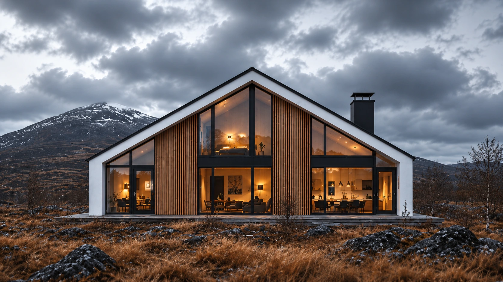

O prazer de estar em casa.
Salas que acolhem. Espaços que conectam.
O seu jeito de viver.
Em cada detalhe.
Arquitetura e interiores que traduzem quem você é.
01 / 03
Solicitar orçamento
DETTAGLI ARQUITETURA
Feito para sentir.
Pensado para viver.
01
Arquiteturaresidencial
02
Designde interiores
03
Reformare transformar
04
Seu projetoem cada detalhe
01 / O ESCRITÓRIO
O extraordinário
mora no detalhe.
ARQUITETURA PARA A VIDA REAL
Antes de desenhar
um espaço, ouvimos
uma história.
A Dettagli Arquitetura é um escritório de arquitetura, design de interiores e projetos residenciais. Criamos espaços a partir de pessoas: seus hábitos, seus desejos e o modo como querem viver.
Conheça nosso processoUMA CASA. MUITAS POSSIBILIDADES.
Mais do que morar.
Pertencer.
DO PRIMEIRO TRAÇO À SUA ROTINA
Espaços que acolhem.
Escolhas com intenção.
Uma história que é só sua.
A sua vida.
O nosso olhar.
Construir, reformar ou decorar começa com uma boa conversa. Aproximamos ideias, necessidades e possibilidades para dar forma ao seu próximo capítulo.
Converse com a DettagliArquitetura residencial e design de interiores.
01 / DETTAGLI
Escuta e proximidade
02 / DETTAGLI
Espaços com identidade
03 / DETTAGLI
Luz e materialidade
04 / DETTAGLI
Beleza que funciona
05 / DETTAGLI
Conforto para viver
06 / DETTAGLI
Cuidado em cada escolha
02 / O QUE FAZEMOS
Seu próximo capítulo
começa aqui.
Da casa inteira ao ambiente que precisa de um novo olhar. Um projeto com a sua medida e a sua identidade.
UM AMBIENTE, MUITAS CAMADAS
O detalhe muda tudo.
TOQUE NOS PONTOS PARA DESCOBRIR
Luz
A iluminação define atmosferas, valoriza materiais e acompanha os diferentes momentos do dia.
Integração
A relação entre os ambientes cria percursos naturais e aproxima as pessoas.
Mobiliário
Escala, conforto e circulação orientam escolhas que fazem sentido para a sua rotina.
Materialidade
Texturas, cores e acabamentos contam uma mesma história, sem abrir mão da funcionalidade.
A casa é o seu
universo.
Estar, receber, descansar. Cada ambiente tem um papel. O projeto aproxima todos eles.
01 / Salas de estar
O centro dos seus encontros.
Sofás, poltronas e luz em uma composição pensada para acolher e compartilhar.
Conversar sobre este ambiente Imagem ilustrativa baseada nas referências fornecidas.UM NOVO JEITO DE OLHAR
Da ideia ao espaço.
Do espaço à vida.
03 / GALERIA DE AMBIENTES
Espaços com alma.
Histórias com forma.
Um repertório de interiores, residências e novas maneiras de viver.
Releituras visuais criadas com IA a partir das referências enviadas, junto às imagens originais.
13 ambientes em exibição.
A arte de estar
Sala de estarDettagli / seleção visual
Entre luz e jardim
Interiores residenciaisDettagli / seleção visual
Linhas que acolhem
Arquitetura residencialDettagli / seleção visual
Viver ao ar livre
Áreas de convivênciaDettagli / seleção visual
Natureza por perto
Casa e paisagemDettagli / seleção visual
Um novo olhar
Reforma residencialDettagli / seleção visual
Convívio e conexão
Espaços compartilhadosDettagli / seleção visual
A escala do detalhe
Ambientes integradosDettagli / seleção visual
Ritmos da fachada
Composição arquitetônicaDettagli / seleção visual
Pátios para viver
Residencial e lazerDettagli / seleção visual
Arquitetura em conjunto
Perspectivas residenciaisDettagli / seleção visual
Presença e proporção
Fachada residencialDettagli / seleção visual
O desenho da chegada
Casa contemporâneaDettagli / seleção visual
Um novo olhar, em movimento.
Os vídeos dos ambientes serão adicionados à galeria. Enquanto isso, explore as fotografias ou converse com a Dettagli para conhecer mais.
Conhecer os projetos pelo WhatsAppO próximo capítulo pode ser o seu.
Vamos tirar sua ideia do papel04 / NOSSO PROCESSODa conversa
Da conversa
ao traço.
Um percurso construído junto com você. Cada etapa dá mais clareza ao que vamos criar.
Conte a sua ideia- 01
Escutar
Conhecer você, sua rotina e o que deseja transformar.
- 02
Entender o espaço
Reunir medidas, referências, prioridades e possibilidades.
- 03
Definir a proposta
Alinhar escopo, investimento e etapas do trabalho.
- 04
Criar o conceito
Explorar a organização dos ambientes e a linguagem do projeto.
- 05
Desenvolver o projeto
Aprofundar soluções, materiais, iluminação e mobiliário.
- 06
Detalhar as escolhas
Traduzir o conceito em informações para a execução, conforme o escopo contratado.
- 07
Preparar o próximo passo
Entregar o projeto e orientar a continuidade do seu novo ambiente.
SEU ESPAÇO. SUA ESSÊNCIA.
Uma casa para viver.
Uma história para sentir.
05 / RELAÇÕES QUE IMPORTAM
Confiança se
constrói junto.
Cada conversa, cada escolha e cada experiência fazem parte da nossa história.
AVALIAÇÕES DE CLIENTESA sua experiência
A sua experiência
também faz parte.
Conheça o perfil da Dettagli no Google. Já conversou ou projetou com a gente? Compartilhe a sua experiência por lá.
Ver perfil e avaliações no Google06 / VAMOS CRIAR JUNTOSSeu sonho
Seu sonho
merece um
bom projeto.
Conte o que você imagina para construir, reformar ou decorar. A primeira conversa é o começo de um novo espaço.
Prefere conversar?(71) 99254-565007 / A GENTE SE ENCONTRA AQUI
Uma boa conversa.
Infinitas possibilidades.
(71) 99254-5650 - Endereço & localização
- Consulte a localização no Google Maps.
- Horário de atendimento
- Consulte os horários e agende pelo WhatsApp.
pode ser o seu projeto.